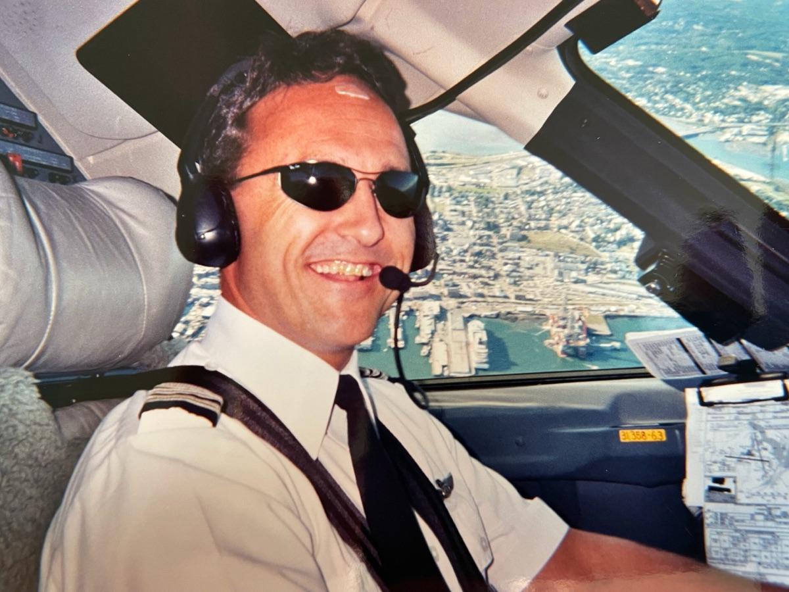

01 · Ferry & Positioning
Get the airplane where it needs to be.
For aircraft owners who need a plane somewhere it is not, ferry and positioning flights are the bread and butter of contract piloting. Paul flies single and twin-engine piston, turboprop, and light jet aircraft on positioning legs, repossession deliveries, and pre-purchase movements.
The schedule is yours. The route, weather call, and operational decisions are made with the experience of a captain who has flown both Naval carrier approaches and regional airline operations across the eastern United States.
